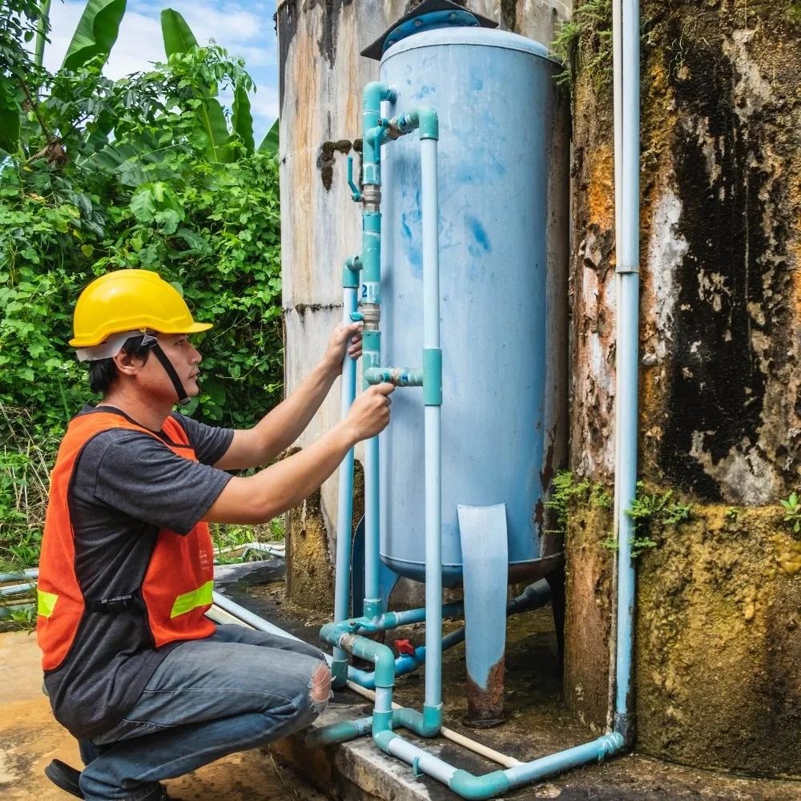
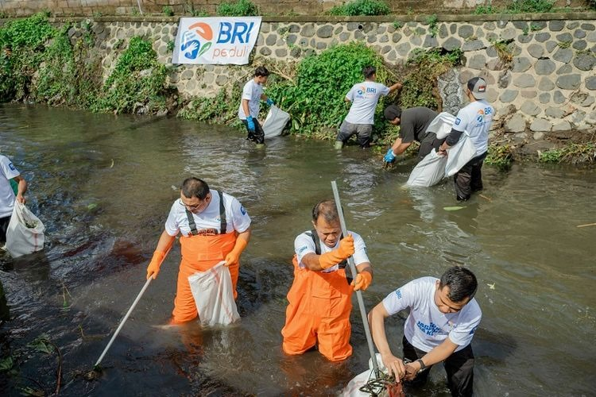
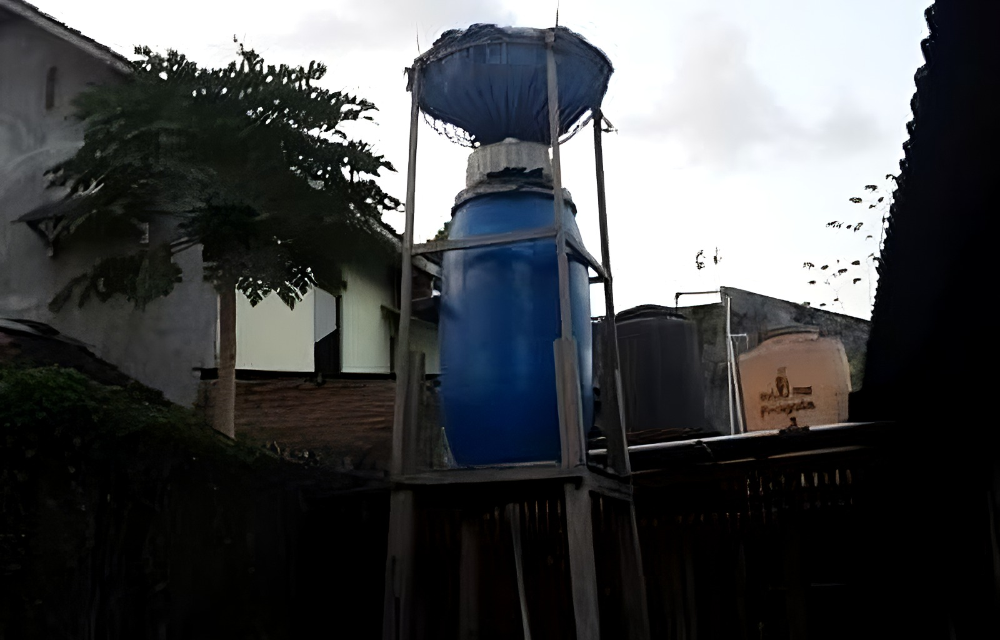

Ayo wujudkan akses air bersih untuk semua. Setiap tetes yang Anda berikan sangat berarti.
Bergabung & BerdonasiAir bersih adalah hak dasar setiap manusia. Jutaan orang di dunia masih kesulitan mendapatkan akses air yang layak, sehingga berdampak pada kesehatan, pendidikan, dan kesejahteraan mereka. Kami hadir untuk menjadi jembatan antara Anda dan mereka yang membutuhkan.
Dengan program-program berkelanjutan, kami membangun fasilitas air, menyediakan edukasi kebersihan, dan memberdayakan komunitas lokal.
Pencemaran air umumnya disebabkan oleh limbah rumah tangga (sabun, detergen, sampah), limbah industri yang mengandung bahan kimia berbahaya, serta pestisida dan pupuk pertanian yang terbawa aliran air. Selain itu, kotoran peternakan, sampah plastik, penebangan hutan, kegiatan pertambangan, dan tumpahan minyak juga memperburuk kualitas air. Faktor terpenting lainnya adalah kurangnya kesadaran masyarakat yang masih sering membuang limbah langsung ke sungai atau danau.
Air tidak bersih mengandung bakteri, virus, dan parasit penyebab diare, kolera, dan tifus. Tanpa sanitasi memadai, wabah penyakit mudah menyebar dan memperburuk kesehatan masyarakat.

Krisis air bersih mengganggu habitat tumbuhan dan hewan. Ekosistem sungai, danau, dan rawa terganggu jika suplai air berkurang. .
Kelangkaan air menyulitkan aktivitas harian seperti mandi dan mencuci. Masyarakat menghabiskan lebih banyak waktu mencari air, menurunkan produktivitas dan memperparah kemiskinan.